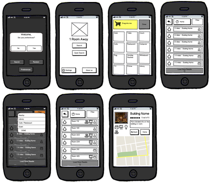

Draft 1
Armed with these two ideas, we set out to create very low-fidelity prototypes of both solutions. We got
together to decide the main functionalities of each prototype before splitting off to create them.
Main Functionalities- The Monitor:
- A blueprint-type map of each floor
- Icons representing each amenity available in each room
Vijai drew up a prototype of this on paper.
Main Functionalities- The App:
- A 'quick search' which does not take into account preferences
- A 'search' which takes into account preferences
- Selectable preferences
- Building results that further filter into room results
- A final result that has more detailed info on the space
David whipped up some wireframes in Balsamiq, which we then printed out. Below are the wireframes he
created.
